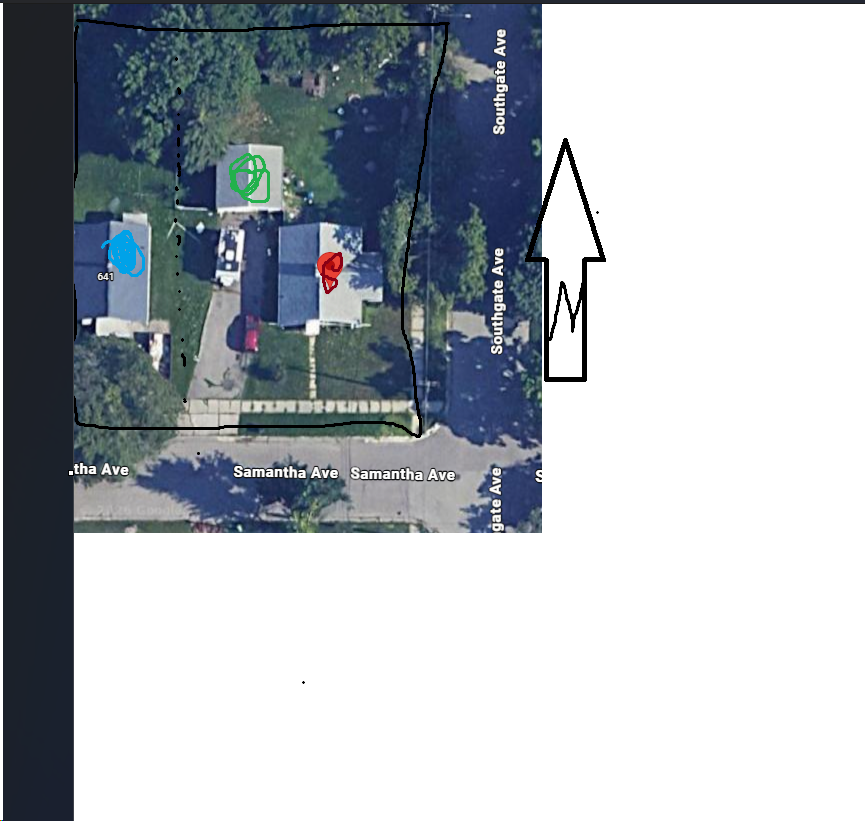

🔺 THREE-POINT TOPOLOGY
🔴 House 1 (LAN 1)ALIVE
🔵 House 2 (LAN 2)ALIVE
🟢 GaragePLANNED
10G Fiber0.82ms
WiFi Bridge~10ms
Pixel → eastGate11ms
👁️ LEFT EYEFlint 1 (LAN 1)
👁️ RIGHT EYEFlint 2 (LAN 2)
Total GPUs6 active
Tissue Models12 (blueGate)
Brain (eastGate/blueGate)
Heart (northGate/swiftGate)
Forge (sporeGate/ironGate/NUCs)
Eye (Flint/Router WiFi)
Switch (JetStream/MikroTik)
Mobile (Pixel/swiftGate)
AP (Omada/eero)
━ ━ 10G Fiber
╌ ╌ WiFi
── Wired

LAN 1
LAN 2
GARAGE
👁️ L
R 👁️
🧠 eastGate (.244)
Brain — RTX 4070, 17 primals
LAN 1 • House 1
❤️ northGate (.147)
Heart — RTX 5090, 63 models
9950X3D • 96GB
🔨 sporeGate (.3)
Forge — Ryzen 5, 27GB, DDR5 NUC
14 primals • Pop!_OS
🔨 ironGate (.237)
Forge 2 — i9-14900K, RTX 5070
94GB DDR5
🍎 graftGate (.107)
Mac Mini M4 • 16GB unified
👁️ FLINT 1 — LEFT EYE
GL-MT6000 Router (.1/.250)
Aperture Science + GAIA + Black Mesa
LAN 1 WiFi radios
🦴 MikroTik (.2)
L2 Switch — House 1 backbone
📱 southGate (.148)
iPhone XS — Home Phone
🧠 blueGate (.100/.210)
Brain 2 — Gaia IDE :3141
12 tissue models • Windows
LAN 2 • House 2
❤️ swiftGate (BOOTING)
Heart 2 — NZXT H1 V2, RTX 3070
MOBILE demo unit
WiFi not configured yet
👁️ FLINT 2 — RIGHT EYE
GL.iNet Flint (bridge mode)
GAIA 5GHz: ce:ef:ef:30:b5:f3
LAN 2 WiFi relay
🦴 JetStream (.111)
10G Fiber Bridge
0.82ms to House 1
📡 Omada AP (.198)
ApertureScience 5GHz: b6:c3:31
ApertureScience 2.4GHz: ae:44:09
Standalone (no controller)
🖼️ frameGate (.203)
Steam Frame — Snapdragon 8 Gen 3
ARM64! • GAIA's face
💤 SLEEPING
📱 Pixel (.156)
grapheneGate — Diamond Lens
37 sensors • Mali-G715
ADB: 192.168.4.156:5555
WiFi: ApertureScience via Omada
🔨 DDR3 NUC-1 (PLANNED)
Forge mirror • membrane + ollama
📡 via eero WiFi bridge
🔨 DDR3 NUC-2 (PLANNED)
Forge mirror • membrane + ollama
📡 via eero WiFi bridge
📡 eero #1 GATEWAY (.115)
MAC: c8:e3:06:c6:77:a1 (WAN)
10.0.4.1 (LAN) — DHCP server
Aperture Science + mesh "12239d3"
Plugged into sporeGate enp1s0
📡 eero #2 SATELLITE
MAC: 78:76:89:96:e5:8b
10.0.4.21 — WiFi mesh ~5ms
Aperture Science + mesh "12239d3"
📡 eero #3 (10.0.4.20)
48:35:2b eero Labs
On eero subnet • role TBD
GARAGE deployment target
eero 10.0.4.0/22
◄── 10G fiber 0.82ms ──►
WiFi ~10ms
📡 SETI FIX